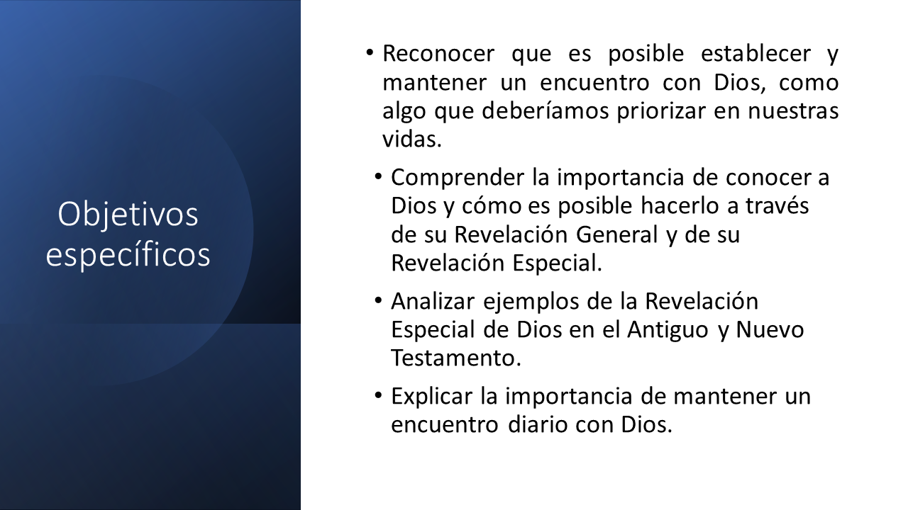
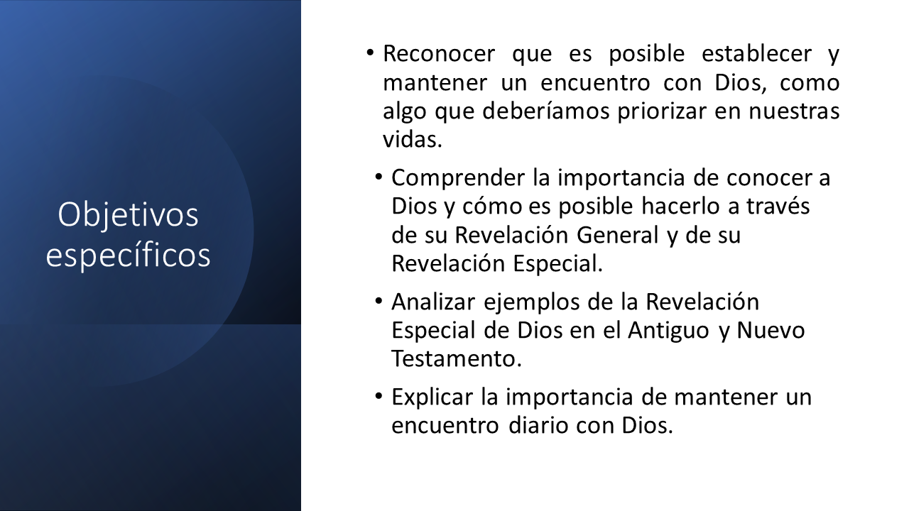

Encuentro con Dios
Objetivo y justificacióndel curso
Retroalimentación: Rellenar huecos
Obra publicada con Licencia Creative Commons Reconocimiento Compartir igual 4.0

Obra publicada con Licencia Creative Commons Reconocimiento Compartir igual 4.0